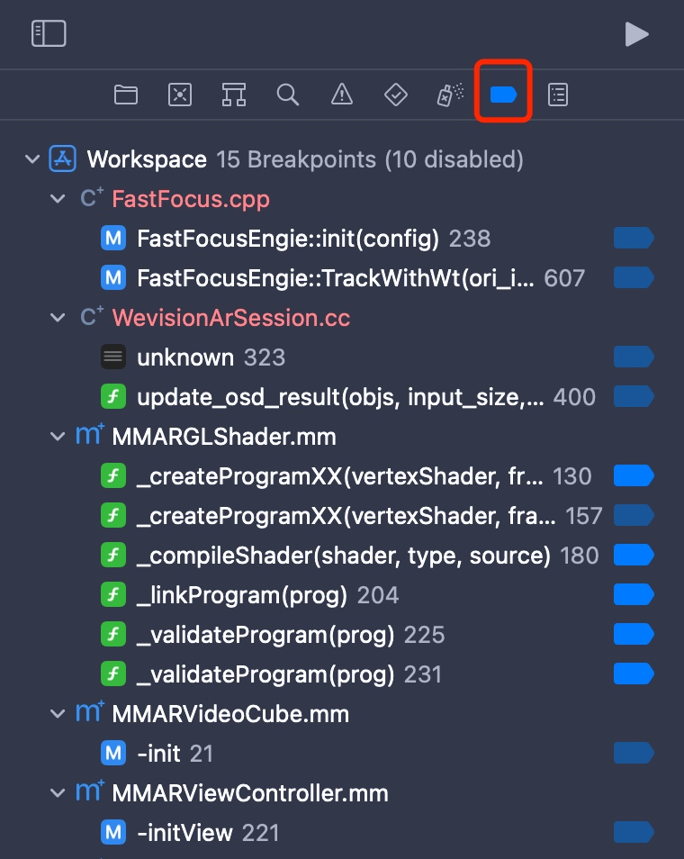
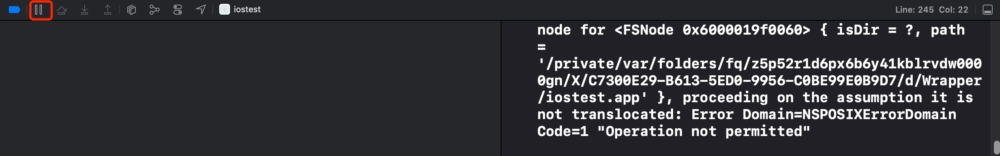
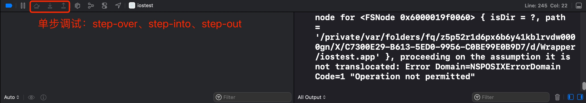
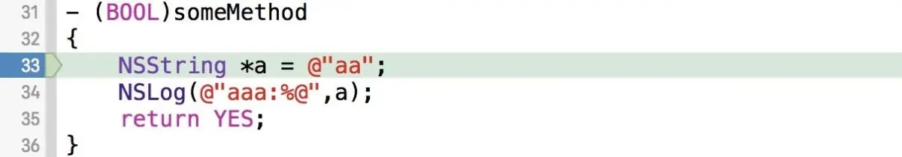

LLDB - 源码调试工具
LLDB 是 LLVM 编译套件里的一个调试工具，也是 XCode 的调试器，本文总结下如何使用 XCode + LLDB 进行调试。包含一些基本的使用方法和一些小技巧。
XCode LLDB 调试界面
通常来讲，会先添加一个符号断点，然后命中断点之后可以查看当前堆栈和变量，可以单步调试等等。
这里可以查看目前项目填加的所有断点。包含生效的和未生效的。

一般来讲，通过 XCode 启动程序之后，会自动打开调试面板。可以通过点击这个按钮中断程序，以便于利用 LLDB 的能力进行调试工作。

命中断点之后，XCode 也会自动打开这个面板，以便于单步调试等。

这个非常简单，就不细说了。
LLDB 常用命令
expression / p / po
顾名思义，exception 命令是用来执行一个表达式，并返回结果。
当然它有一些参数，可以通过 在 lldb 控制台输入 help expression 查看详细说明。
日常较少直接使用 exception，更多的是使用 p 和 po 命令。
- p：执行语句返回结果，或者打印变量值，如果是指针，会打印地址
- po：执行语句返回结果，或者打印变量值，如果是指针，会调用对象的
description函数并打印出来
一般就无脑 po 就行了，有时候明确想查看对象的指针时可以用一下 p。
在使用 po 打印 OC 对象的时候经常遇到一些函数找不到的错误，可以使用 @import UIKit 的方式手动导入 👇🏻。
(lldb) p self.view.frame
error: property 'frame' not found on object of type 'UIView *'
error: 1 errors parsing expression
(lldb) e @import UIKit
(lldb) p self.view.frame
(CGRect) $0 = (origin = (x = 0, y = 0), size = (width = 375, height = 667))
更多命令和用法可以通过 man lldb 和 lldb --help 查看文档，有详细的描述。
thread return
在单步调试时，有时候想直接让函数返回，不继续执行下面的逻辑，可以使用这个命令。

比如在上图的断点处执行 thread return NO，函数立刻返回，相当于执行了 return NO，当然，你也可以执行 thread return YES。
其他 thread 指令都不太常用或者用处不大，详情参考 help thread。
breakpoint & watchpoint
关于 breakpoint，平时在 XCode 里点击代码右侧添加的断点就是 breakpoint（符号断点），也就是给某个函数的某一行增加一个端点，也是最常用的。虽然有 lldb 命令，但是 XCode 提供的 UI 操作界面已经很简单易用了，没必要用命令行指令，这里就不提了。
除此之外，还有一个 watchpoint，是给具体某个地址加一个端点，当该地址里的内容发生变化时会中断程序。
watchpoint set variable
一般情况下，要观察变量或者属性，使用 watchpoint set variable 命令即可。比如：
(lldb) watchpoint set variable self->_string
Watchpoint created: Watchpoint 1: addr = 0x7fcf3959c418 size = 8 state = enabled type = w
watchpoint spec = 'self->_string'
new value: 0x0000000000000000
这里有个细节：👇🏻
watchpoint set variable self->_string // 可以 self->_string 是个变量
watchpoint set variable self.string // 不可以，self.string 是个 getter 方法
另外，每个 watchpoint 都有一个数字 ID，比如上面的例子里的 ID 是 1，后续操作这个 watchpoint 都要指定这个 ID。
watchpoint set expression
如果想监听某个地址的内容变化，可以使用 watchpoint set expression address。
(lldb) p &_model
(Modek **) $3 = 0x00007fe0dbf23280
(lldb) watchpoint set expression 0x00007fe0dbf23280
Watchpoint created: Watchpoint 1: addr = 0x7fe0dbf23280 size = 8 state = enabled type = w
new value: 0
watchpoint list
查看当前添加的所有 watchpoint。
(lldb) watchpoint list
Number of supported hardware watchpoints: 4
Current watchpoints:
Watchpoint 1: addr = 0x7fe9f9f28e30 size = 8 state = enabled type = w
watchpoint spec = '_string'
old value: 0x0000000000000000
new value: 0x000000010128e0d0
watchpoint enable/disable/delete
将某一个 watchpoint 打开/关闭/删除
(lldb) watchpoint enable 1
1 watchpoints enabled.
(lldb) watchpoint disable 1
1 watchpoints disabled.
(lldb) watchpoint delete 1
1 watchpoints deleted.
更多命令
本文只列一些常用的命令，更多命令可以通过在 lldb 命令行中输入 help 查看。
转载请注明出处：LLDB - 源码调试工具 - 专业点
欢迎关注我的公众号

推荐

公众号推荐
欢迎关注我的公众号一起愉快的交流。